Identification of Imported Malaria Cases
DISCLAIMER
Simulated data and scenario for teaching only. The scenario is fictional and is not evidence of an actual outbreak or malaria-free status in the stated location. The genotype and resistance datasets are synthetic; conclusions must not be applied to public health decisions.
In early 2026, an unexpected cluster of approximately 200 Plasmodium falciparum malaria cases was reported in a simulated district of Namibia that had previously achieved malaria-free status in 2019. The district attracts international tourists, while cross-border movement, particularly from Angola, also creates opportunities for importation.
The team genotyped 200 Namibian outbreak samples and reference samples from Africa and Southeast Asia using a common 180-SNP barcode.
Parasites persisting or circulating locally.
Parasites introduced from neighbouring African populations.
Parasites introduced from outside Africa.
Note
Tourism and cross-border movement make multiple hypotheses plausible.
You have two VCF files and sample metadata.
Which genetic evidence supports or challenges each hypothesis?
Genetic similarity can suggest ancestry but cannot independently establish migration direction or place of infection.
Consider travel histories, unsampled populations and sampling bias.
Files supplied
AFR_180snp_DR.vcfSEA_180snp_DR.vcfmetadata_samples.txtResearch question: Where might the outbreak parasites be genetically related to sampled populations?
Recommended: Open setup.R in RStudio and click Source. It checks for missing packages and installs them.
Alternatively, run this once in the RStudio Console:
install.packages(
c("rmarkdown", "knitr", "ggplot2", "ape", "adegenet"),
repos = "https://cloud.r-project.org"
)Note
Run package installation once, before the workshop. You do not need to reinstall packages every session.
Run this code before other analyses.
Read the VCFs and metadata; check sample identifiers and marker counts.
meta <- read.delim("data/metadata_samples.txt", stringsAsFactors = FALSE)
afr <- read_barcode_vcf("data/AFR_180snp_DR.vcf")
sea <- read_barcode_vcf("data/SEA_180snp_DR.vcf")
#stopifnot(!anyDuplicated(meta$sample))
#stopifnot(setequal(meta$sample, c(rownames(afr$x), rownames(sea$x))))
#stopifnot(ncol(afr$x) == 180L, ncol(sea$x) == 180L)African dataset: 310 samples × 180 SNPs
Southeast Asian dataset: 90 samples × 180 SNPs
Total: 400 samples
Angola Botswana BurkinaFaso Cambodia Ghana Kenya
30 20 20 30 20 20
Laos Namibia Thailand
30 200 30 A missing genotype is not the reference allele. The small VCF reader in helpers.R accepts haploid 0/1 calls as a single parasite barcode state; missing calls are NA.
missingness <- function(genotypes) {
list(
sample = rowMeans(is.na(genotypes)),
snp = colMeans(is.na(genotypes))
)
}
qc_af <- missingness(afr$x)
qc_se <- missingness(sea$x)
qc_samples <- rbind(
data.frame(
sample = names(qc_af$sample),
missing = qc_af$sample,
region = "Africa"
),
data.frame(
sample = names(qc_se$sample),
missing = qc_se$sample,
region = "Southeast Asia"
)
)
ggplot(qc_samples, aes(missing, fill = region)) +
geom_histogram(bins = 20, alpha = 0.65) +
geom_vline(xintercept = 0.08, linetype = 2) +
facet_wrap(~region) +
theme_minimal() +
labs(
title = "Sample missingness",
x = "Fraction of missing SNPs",
y = "Samples"
)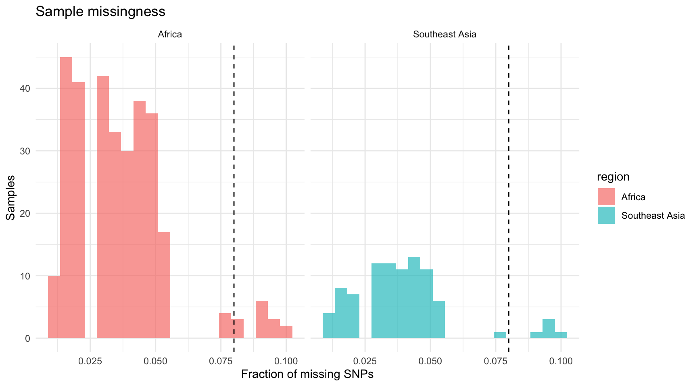
qc_snps <- rbind(
data.frame(
missing = qc_af$snp,
region = "Africa"
),
data.frame(
missing = qc_se$snp,
region = "Southeast Asia"
)
)
ggplot(qc_snps, aes(missing, fill = region)) +
geom_histogram(bins = 20) +
geom_vline(xintercept = 0.10, linetype = 2) +
facet_wrap(~region) +
theme_minimal() +
labs(
title = "SNP missingness",
x = "Fraction of missing samples",
y = "SNPs"
)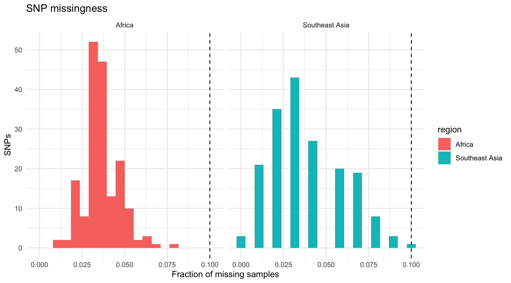
# Apply QC in two steps: remove poor-quality samples, then poor-quality SNPs.
# Keeping the two steps visible makes it easier to explore other thresholds.
filter_genotypes <- function(genotypes, sample_max = 0.08, snp_max = 0.10) {
sample_missing <- rowMeans(is.na(genotypes))
genotypes <- genotypes[sample_missing <= sample_max, , drop = FALSE]
snp_missing <- colMeans(is.na(genotypes))
genotypes <- genotypes[, snp_missing <= snp_max, drop = FALSE]
# Require at least two observed genotypes per marker.
genotypes[, colSums(!is.na(genotypes)) >= 2, drop = FALSE]
}
# Teaching thresholds: samples <=8% missing; SNPs <=10% missing.
x_af <- filter_genotypes(afr$x, sample_max = .08, snp_max = .10)
x_se <- filter_genotypes(sea$x, sample_max = .08, snp_max = .10)
print(data.frame(region = c('Africa','Southeast Asia'),
samples_retained = c(nrow(x_af),nrow(x_se)),
SNPs_retained = c(ncol(x_af),ncol(x_se)))) region samples_retained SNPs_retained
1 Africa 296 180
2 Southeast Asia 85 180Exercises: Change the sample threshold to 5%. What changes? - Which samples have the highest missingness? - Are these thresholds suitable for a surveillance study?
# Pairwise mismatch: count differences only at SNPs typed in BOTH samples.
# Divide by the number of shared, observed SNPs (not all 180 SNPs).
pairwise_mismatch <- function(genotypes, min_overlap = 10) {
n <- nrow(genotypes)
distances <- matrix(0, n, n,
dimnames = list(rownames(genotypes), rownames(genotypes)))
overlaps <- matrix(0L, n, n, dimnames = dimnames(distances))
for (i in seq_len(n)) {
for (j in i:n) {
shared <- !is.na(genotypes[i, ]) & !is.na(genotypes[j, ])
n_shared <- sum(shared)
overlaps[i, j] <- overlaps[j, i] <- n_shared
mismatch <- if (n_shared >= min_overlap) {
mean(genotypes[i, shared] != genotypes[j, shared])
} else NA_real_
distances[i, j] <- distances[j, i] <- mismatch
}
}
diag(distances) <- 0
list(distance = distances, overlap = overlaps)
}
d_se <- pairwise_mismatch(x_se, min_overlap = 10)$distance
d_af <- pairwise_mismatch(x_af, min_overlap = 10)$distance
summary(as.vector(d_se[upper.tri(d_se)]))
#warning
stopifnot(!anyNA(d_se), !anyNA(d_af)) Min. 1st Qu. Median Mean 3rd Qu. Max.
0.03509 0.11923 0.19885 0.23579 0.23392 0.64596 PCoA represents genetic distance in a low-dimensional plot. Nearby points have similar SNPs; axes do not represent geographic coordinates.
Other tasks:
# Classical multidimensional scaling (PCoA)
# using pairwise genetic distances.
make_pcoa <- function(distance_matrix, metadata, plot_title) {
stopifnot(!anyNA(distance_matrix))
pcoa <- cmdscale(
as.dist(distance_matrix),
k = 2,
eig = TRUE,
add = TRUE
)
coordinates <- data.frame(
sample = row names(pcoa$points),
PC1 = pcoa$points[, 1],
PC2 = pcoa$points[, 2]
)
coordinates$country <- metadata$country[
match(coordinates$sample, metadata$sample)
]
positive_eigenvalues <- pmax(pcoa$eig, 0)
percent <- 100 * positive_eigenvalues[1:2] /
sum(positive_eigenvalues)
ggplot(coordinates, aes(PC1, PC2, colour = country)) +
geom_point(alpha = 0.8, size = 2) +
theme_minimal() +
labs(
title = plot_title,
x = paste0("PCoA 1 (", round(percent[1], 1), "%)"),
y = paste0("PCoA 2 (", round(percent[2], 1), "%)")
)
}
print(make_pcoa(d_se, meta, "Southeast Asian barcode PCoA"))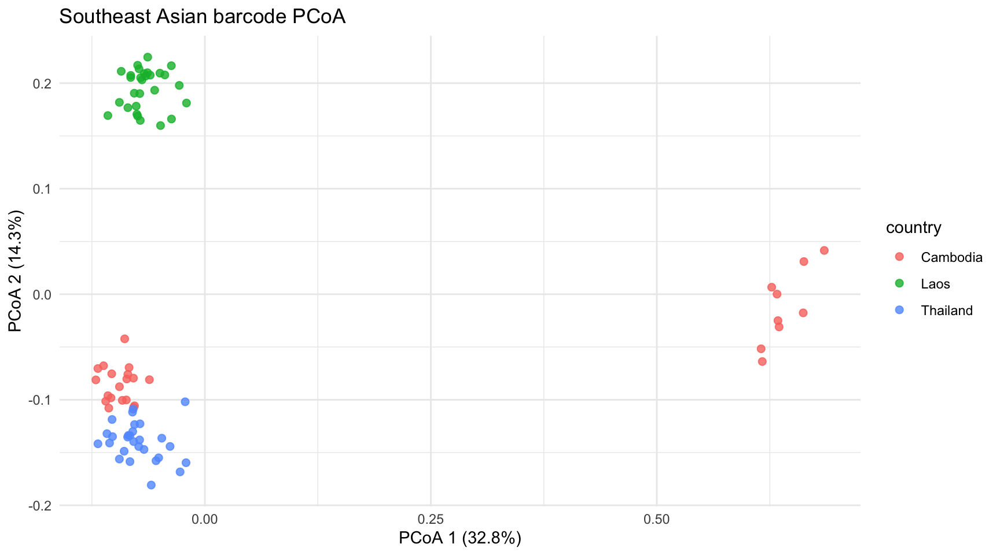
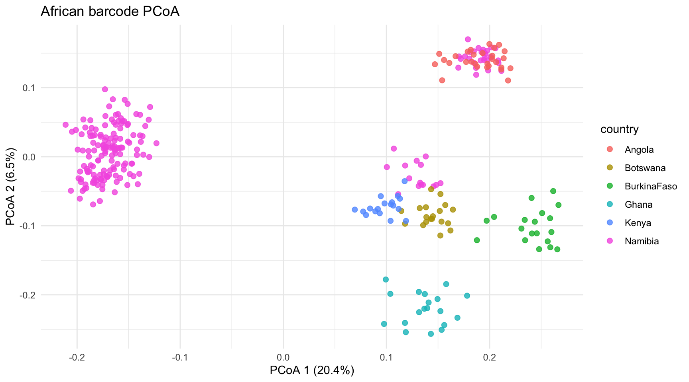
What Does PCoA Do?
Converts genetic distances between samples into a visual 2-D or 3-D space.
Places genetically similar samples closer together, and genetically different samples farther apart.
Helps uncover population structure, clusters, admixture, and outliers.
Why It’s Useful for This Workshop?
Shows whether the Namibia samples form a tight cluster (suggesting an outbreak from a common source).
Reveals where the outbreak is genetically similar to.
Quickly distinguishes regional genetic signatures (SEA vs Southern Africa vs West Africa).
Strengths?
Very fast, works on large datasets.
Makes complex multidimensional relationships easy to interpret.
No model assumptions (unlike PCA which assumes linearity).
Great for teaching and preliminary exploration.
Weaknesses?
The axes are often hard to interpret biologically.
Does not explicitly model ancestry or evolution.
Clusters can appear clearer or blurrier depending on scaling.
Neighbour joining displays a distance-based clustering summary.
Exercises for Section 5. Phylogenetic Tree (Neighbor-Joining) - What patterns do you observe in this section? - Which samples or populations stand out? - What does this tell you about the population structure? - Why do we use phylogentic trees plots?
Other tasks:
# Neighbour-joining builds an unrooted distance-based tree.
# Tip colours indicate sampling country, not transmission direction.
plot_nj <- function(distance_matrix, metadata, plot_title) {
stopifnot(!anyNA(distance_matrix))
tree <- ape::njs(as.dist(distance_matrix))
countries <- sort(unique(metadata$country))
palette <- setNames(grDevices::hcl.colors(length(countries), 'Dark 3'), countries)
tip_country <- metadata$country[match(tree$tip.label, metadata$sample)]
ape::plot.phylo(tree, type = 'fan', show.tip.label = FALSE,
edge.width = 0.7, main = plot_title)
ape::tiplabels(pch = 16, col = palette[tip_country], cex = 0.65)
legend('topleft', legend = names(palette), col = palette,
pch = 16, cex = 0.7, bty = 'n')
invisible(tree)
}
plot_nj(d_se, meta, 'Southeast Asia: neighbour-joining tree')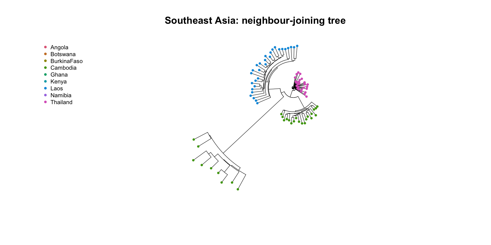
Tree Purpose
Reconstruct relationships between samples.
Show how lineages evolved over time.
Help identify transmission clusters, founder haplotypes, and ancestral relationships.
What a Tree Shows?
Reconstructs evolutionary relationships between samples.
Branch lengths reflect genetic distance or divergence.
Clades represent groups with shared ancestry.
Why It’s Useful for This Workshop?
Can identify a single outbreak clade in Namibia.
Confirms where the outbreak samples descend from.
Highlights differences between:
outbreak lineage
local African diversity
SEA background structure
Strengths
High interpretability: evolutionary history shown as branching patterns.
Excellent for identifying clonal expansions, outbreak clusters, and transmissions.
Works even with small numbers of SNPs (e.g. barcodes).
Weaknesses
Distance-based trees (e.g., NJ) do not model evolution explicitly.
Low SNP counts can produce low-resolution or uncertain topologies.
Recombination in malaria violates tree assumptions - networks or clustering methods may be more accurate.
Trees can mislead if there is strong admixture or reticulation.
Note
When would you use a PCoA plot and a tree in the following scenarios?
Explore broad population structure
Identify outbreak clusters
Examine evolutionary relationships
Identify drug resistant mutations
Detect admixture or complex ancestry
First-pass QC / exploratory analysis
Solution
| Purpose | Best Method | Why |
|---|---|---|
| Explore broad population structure | PCoA | Fast, intuitive, clustering-focused |
| Identify outbreak clusters | PCoA and Trees | PCoA visualises clusters, tree shows lineage |
| Examine evolutionary relationships | Tree | Reflects ancestral history |
| Detect admixture or complex ancestry | PCoA (or DAPC) | Trees can be misleading with recombination |
| First-pass QC / exploratory analysis | PCoA | Quick sanity check |
| Identify drug resistant mutations | Neither | These plots will not help us in identifying new or emerging mutations. You can however, colours the plots based on this metadata information. |
For each SNP, estimate the probability that two different sampled haploid parasite genotypes carry different alleles. This is an unbiased, sample-size-corrected biallelic diversity estimate, averaged across typed barcode SNPs.
site_diversity <- function(genotypes, metadata) {
sites <- split(metadata$sample, metadata$site)
do.call(rbind, lapply(names(sites), function(site_name) {
ids <- intersect(sites[[site_name]], rownames(genotypes))
if (!length(ids)) return(NULL)
z <- genotypes[ids, , drop = FALSE]
n_typed <- colSums(!is.na(z))
alt_frequency <- colMeans(z, na.rm = TRUE)
diversity_per_snp <- 2 * alt_frequency * (1 - alt_frequency) *
n_typed / (n_typed - 1)
diversity_per_snp[n_typed < 2] <- NA_real_
data.frame(site = site_name,
country = metadata$country[match(ids[1], metadata$sample)],
pi_barcode = if (all(is.na(diversity_per_snp))) NA_real_
else mean(diversity_per_snp, na.rm = TRUE),
n_samples = length(ids),
n_loci = sum(!is.na(diversity_per_snp)))
}))
}
diversity_af <- site_diversity(x_af, meta)
diversity_se <- site_diversity(x_se, meta)
diversity <- rbind(diversity_af, diversity_se)
print(diversity[order(diversity$pi_barcode, decreasing = TRUE), ]) site country pi_barcode n_samples n_loci
18 Pursat Cambodia 0.34216049 9 180
17 Pailin Cambodia 0.30104420 13 180
14 Battambang Cambodia 0.21407407 6 180
6 KavangoWest Namibia 0.18158688 63 180
13 Zambezi Namibia 0.17249751 69 180
5 KavangoEast Namibia 0.16106621 60 180
9 LuandaNorth Angola 0.09725275 14 180
1 Accra Ghana 0.09497354 9 180
15 Champasak Laos 0.09308303 15 180
19 Savannakhet Laos 0.09206349 14 180
16 Kanchanaburi Thailand 0.08845118 12 180
12 Ouagadougou BurkinaFaso 0.08651235 10 180
2 BoboDioulasso BurkinaFaso 0.08355379 9 180
7 Kisumu Kenya 0.08311448 12 180
4 Huambo Angola 0.08238095 15 180
20 Sisaket Thailand 0.08095340 16 180
8 Kumasi Ghana 0.08083333 10 180
11 Okavango Botswana 0.08007175 11 180
3 Francistown Botswana 0.07731481 8 180
10 Nairobi Kenya 0.06740741 6 180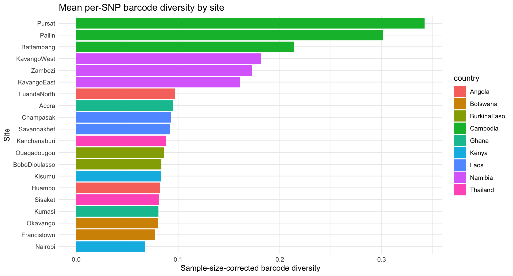
The synthetic VCFs share the same 180 barcode markers, positions and REF/ALT definitions. Nevertheless, a robust pipeline checks allele compatibility before combining data. Any reversed allele definitions are recoded; incompatible variants would be excluded and reported. This prevents a common error when merging real VCFs.
harmonised <- harmonise_vcfs(afr, sea)
print(data.frame(markers_harmonised = harmonised$compatible,
alleles_flipped = harmonised$swapped,
incompatible = harmonised$incompatible))
#warning
stopifnot(harmonised$compatible == 180L, harmonised$incompatible == 0L)
x_all <- filter_genotypes(harmonised$x, sample_max = .08, snp_max = .10)
cat('Global comparison:', nrow(x_all), 'samples and', ncol(x_all), 'SNPs after QC\n')
#warning
stopifnot(ncol(x_all) >= 100L)
d_all <- pairwise_mismatch(x_all, min_overlap = 100)$distance
#warning
stopifnot(!anyNA(d_all)) markers_harmonised alleles_flipped incompatible
1 180 0 0Global comparison: 381 samples and 180 SNPs after QC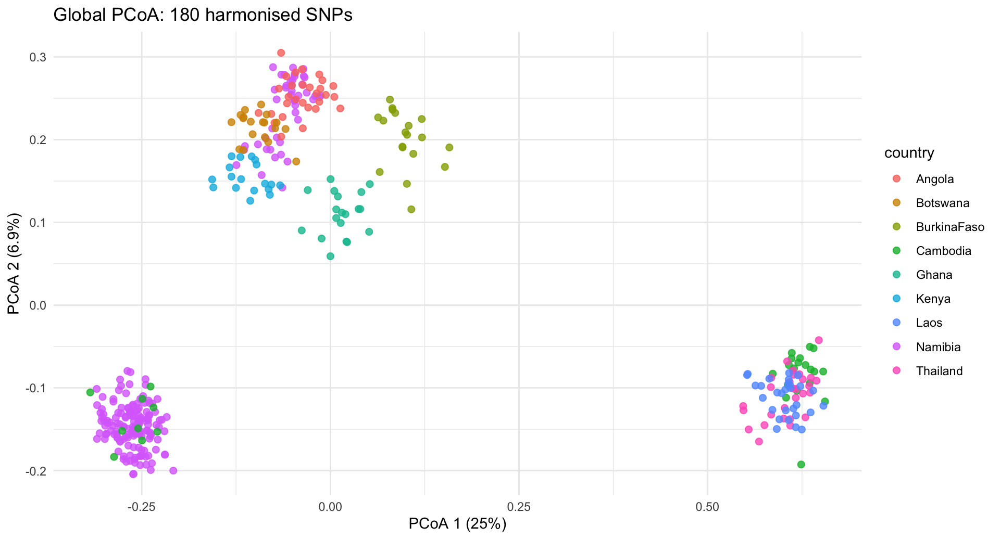
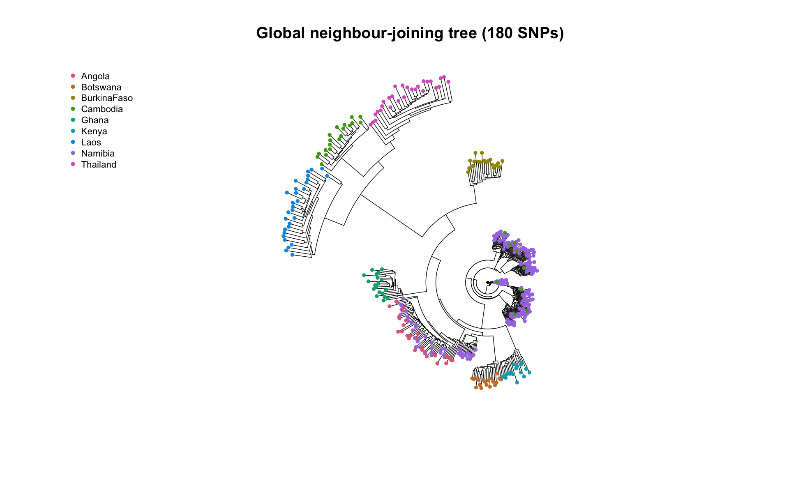
Exercises:
Which countries are genetically closest to the Namibia outbreak samples?
How does missingness filtering affect your confidence?
Break: We will wait until everyone has completed this activity.
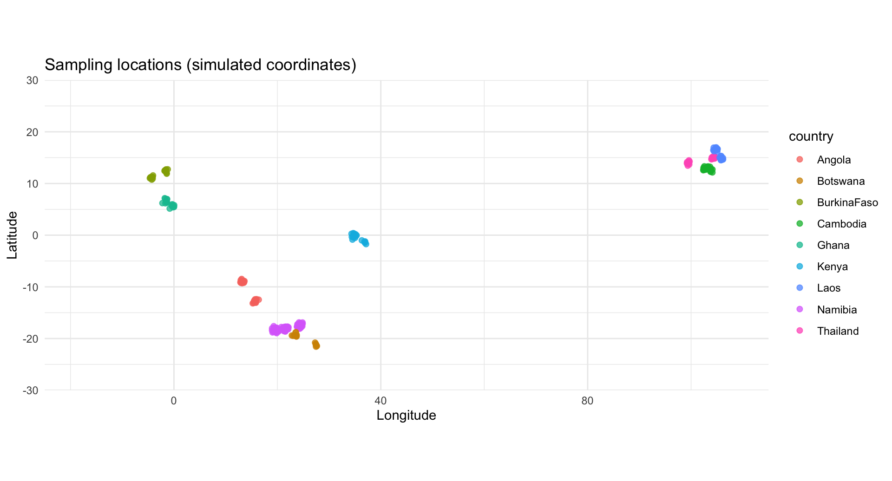
Exercises: Identify the African and Southeast Asian groups. Why is a coordinate plot not enough to infer movement direction?
Resistance markers are provided as simulated metadata. They are not used in the neutral barcode distance analysis. To get this information, samples would be processed using a drug resistant assay. WT indicates wild-type, and other values indicate the listed amino-acids; marker presence alone does not establish clinical treatment failure.
dr <- aggregate(sample ~ country + kelch13_C580Y, meta, length)
names(dr)[3] <- 'n'
dr$total <- ave(dr$n, dr$country, FUN = sum)
dr$proportion <- dr$n / dr$total
ggplot(dr, aes(country, proportion, fill = kelch13_C580Y)) +
geom_col() + coord_flip() + theme_minimal() +
scale_fill_manual(values = c(WT = 'grey75', Y = 'firebrick')) +
labs(title = 'Simulated kelch13 C580Y states', x = 'Country', y = 'Proportion')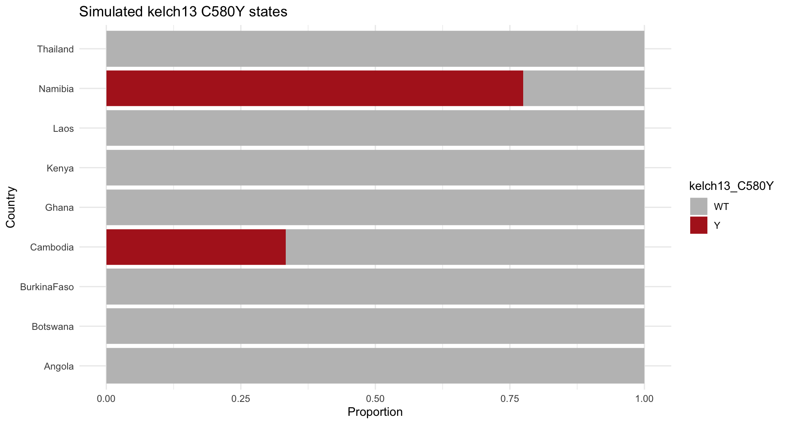
dr_cols <- c('kelch13_C580Y','crt_N75E','crt_K76T','crt_I356T',
'mdr1_N86Y','mdr1_Y184F','dhfr_N51I','dhfr_C59R',
'dhfr_S108N','dhps_A437G','dhps_K540E')
dr_long <- do.call(rbind, lapply(dr_cols, function(marker) {
data.frame(country = meta$country, marker = marker,
mutant = as.numeric(!is.na(meta[[marker]]) & meta[[marker]] != 'WT'))
}))
dr_summary <- aggregate(mutant ~ country + marker, dr_long, mean)
ggplot(dr_summary, aes(marker, country, fill = mutant)) +
geom_tile(colour = 'white') + scale_fill_viridis_c(limits = c(0,1)) +
theme_minimal() + theme(axis.text.x = element_text(angle = 45, hjust = 1)) +
labs(title = 'Simulated drug-resistance marker frequency', x = 'Marker',
y = 'Country', fill = 'Mutant fraction')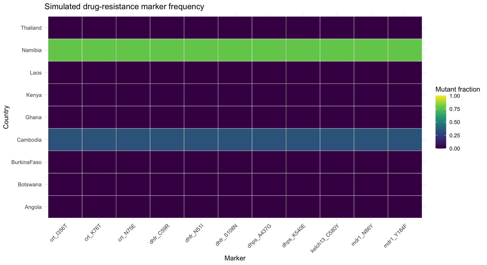
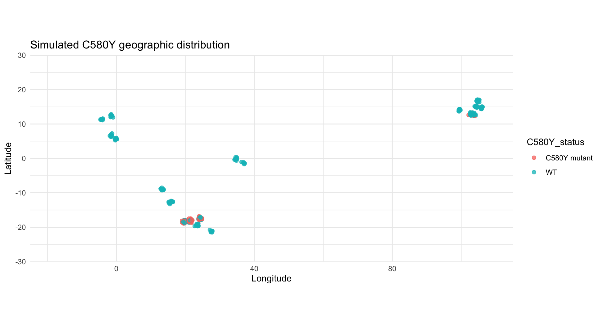
We summarise the fraction of between-country sample pairs whose mismatch proportion is at most a selected threshold. This is an undirected similarity measure, not a migration rate or transmission direction. The connectedness display uses country sampling centroids and no map boundaries.
country <- meta$country[match(rownames(d_all), meta$sample)]
centers <- aggregate(cbind(longitude, latitude) ~ country, meta, mean)
thresholds <- c(.05, .10, .20)
connections <- list()
for (a in seq_len(nrow(centers) - 1)) for (b in (a+1):nrow(centers)) {
ia <- which(country == centers$country[a]); ib <- which(country == centers$country[b])
if (length(ia) * length(ib) < 10) next
values <- as.vector(d_all[ia, ib, drop = FALSE])
for (cutoff in thresholds) {
connections[[length(connections)+1]] <- data.frame(
country1 = centers$country[a], country2 = centers$country[b],
lon1 = centers$longitude[a], lat1 = centers$latitude[a],
lon2 = centers$longitude[b], lat2 = centers$latitude[b],
fraction = mean(values <= cutoff), cutoff = paste0('Mismatch <= ',cutoff))
}
}
connections <- do.call(rbind, connections)
connections <- subset(connections, fraction > 0)
print(ggplot() +
geom_segment(data = connections,
aes(x = lon1, y = lat1, xend = lon2, yend = lat2,
linewidth = fraction, colour = fraction), alpha = .65) +
geom_point(data = centers, aes(longitude, latitude), size = 2) +
geom_text(data = centers, aes(longitude, latitude, label = country),
size = 2.8, vjust = -1) +
facet_wrap(~ cutoff) + coord_quickmap(xlim = c(-25,115), ylim = c(-30,30)) +
scale_linewidth(range = c(.2, 2.5)) + theme_minimal() +
labs(title = 'Genetic connectedness: between-country comparisons',
x = 'Longitude', y = 'Latitude', colour = 'Fraction', linewidth = 'Fraction'))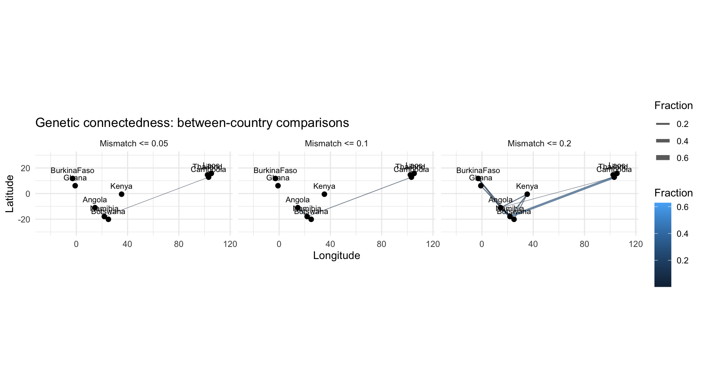
DAPC is a supervised multivariate method when population labels are provided. Here, country labels are known; this analysis describes separation among the specified groups, rather than independently discovering the origin of Namibia parasites. PCA retention is capped conservatively to avoid the interactive console prompts used in the original document.
x_dapc <- x_all
for (j in seq_len(ncol(x_dapc))) {
miss <- is.na(x_dapc[, j])
if (any(miss)) {
x_dapc[miss, j] <- mean(x_dapc[, j], na.rm = TRUE)}
}
groups <- factor(
meta$country[match(rownames(x_dapc), meta$sample)])
stopifnot(!anyNA(groups))
# Run DAPC
# n.pca = number of principal components retained
# n.da = number of discriminant axes retained
n_pca <- 30
n_da <- 4
dapc_fit <- adegenet::dapc(
x_dapc,
grp = groups,
n.pca = n_pca,
n.da = n_da
)
scatter(dapc_fit, scree.da=FALSE, scree.pca=FALSE,
cell=1.5, cex=4, solid=0.8, bg="white",cstar=0, clab=0, leg=TRUE)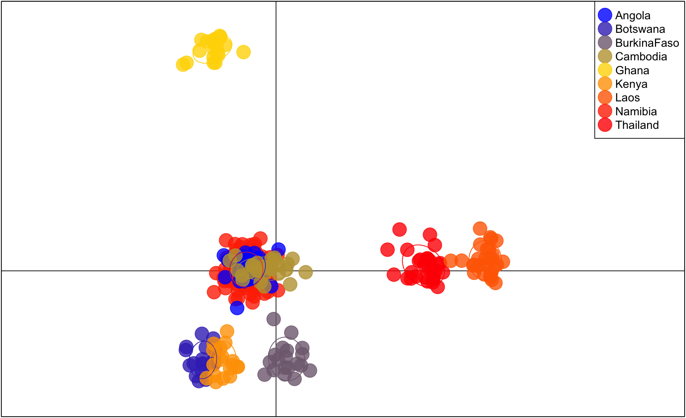
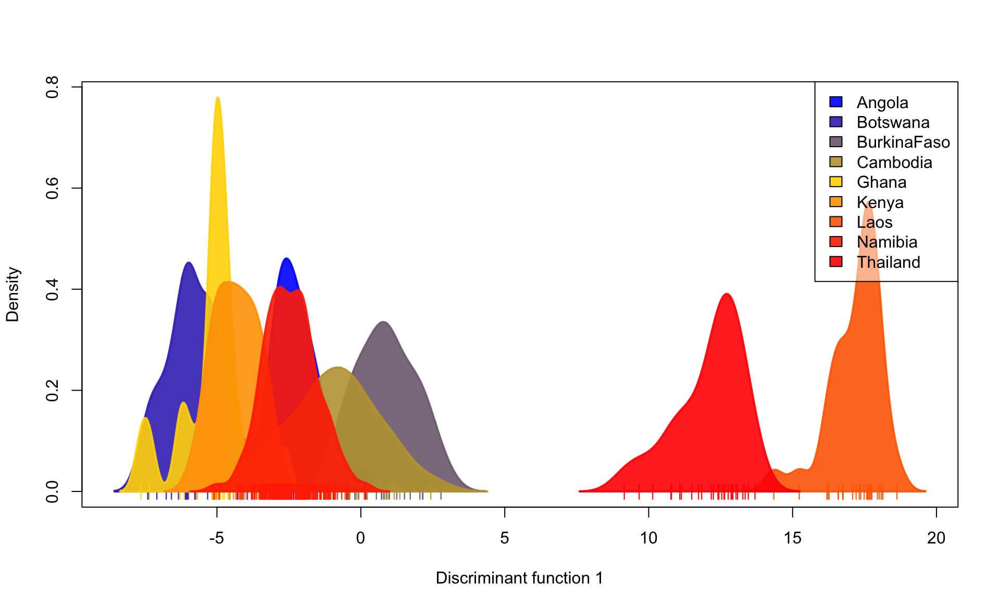
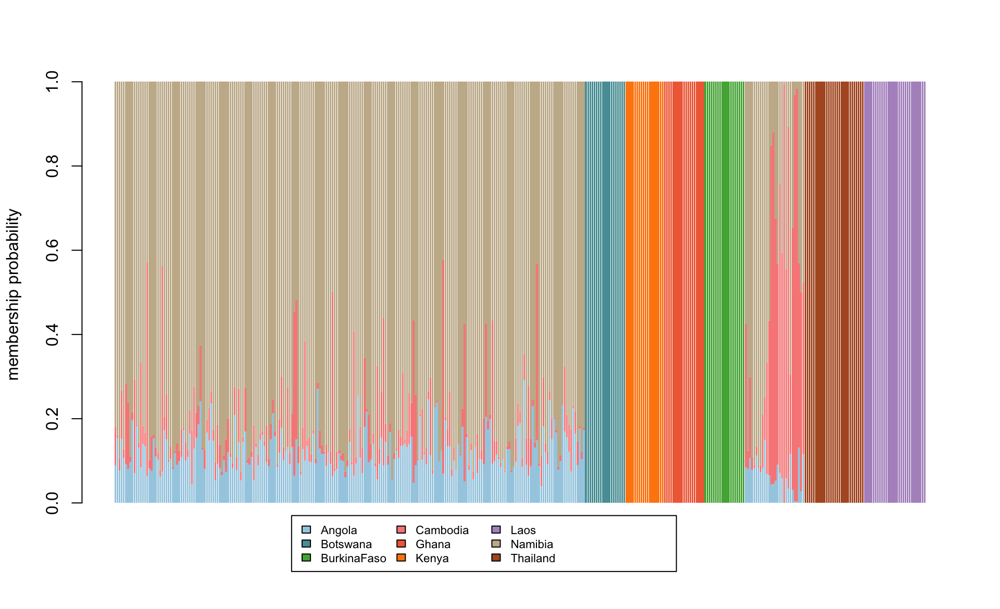
DAPC = Discriminant Analysis of Principal Components, implemented in adegenet.
It is a multivariate clustering method specifically designed for genetic data.
It works in two steps:
PCoA is unsupervised - it reduces the entire distance matrix in a neutral way.
DAPC is supervised - you specify group labels (e.g., country, site, outbreak cluster).
This allows DAPC to highlight the separation you care about, even if subtle.
DAPC often reveals clusters missed by PCA/PCoA.
Particularly useful for:
detecting cryptic population structure
separating closely related subpopulations
identifying outbreak clusters vs. background diversity
Many traditional population genetic methods assume HWE.
DAPC does not, making it suitable for:
mixed infections
clonally expanding outbreaks
organisms with unusual inheritance (e.g., malaria parasites)
You can classify individuals into:
It also provides posterior membership probabilities, helpful for detecting:
imports
admixture
migration events
You can tune the number of PCs to:
avoid overfitting
ensure robust structure inference
Tools like xvalDapc() help you identify the optimal number.
Requires predefined groups - PCoA does not.
(Although find.clusters() can infer groups first.)
Can overfit if too many PCs are retained.
Not a true evolutionary model - separation is statistical, not phylogenetic.
Less intuitive for beginners compared with PCA/PCoA.
PCoA shows the structure that exists naturally; DAPC shows the structure you are specifically looking for.
PCoA asks: “How different are all these samples?”
DAPC asks: “How different are these groups?”
For a readable heatmap, use a fixed selection of outbreak samples and a small reference subset. The complete distance matrix is retained for all calculations.
set.seed(42)
nam <- intersect(rownames(d_all), meta$sample[meta$country == 'Namibia'])
ref_by_country <- split(meta$sample[meta$country != 'Namibia'], meta$country[meta$country != 'Namibia'])
ref_subset <- unlist(lapply(ref_by_country, function(ids) head(intersect(ids, rownames(d_all)), 3)), use.names = FALSE)
chosen <- c(head(nam, 12), ref_subset)
subD <- d_all[chosen, chosen, drop = FALSE]
heat <- as.data.frame(as.table(subD)); names(heat) <- c('sample1','sample2','mismatch')
ggplot(heat, aes(sample1, sample2, fill = mismatch)) +
geom_tile() + scale_fill_viridis_c() + coord_equal() +
theme_minimal() + theme(axis.text.x = element_text(angle = 90, hjust = 1, size = 6),
axis.text.y = element_text(size = 6)) +
labs(title = 'Pairwise barcode mismatch heatmap (selected samples)',
x = NULL, y = NULL, fill = 'Mismatch')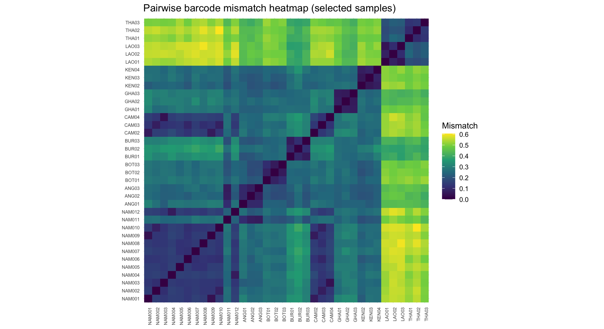
Connectedness Maps (grcMalaria-style)
Connectedness Maps (based on grcMalaria - https://genremekong.org/tools/grcmalaria-guide)
Population Genetic Courses ::: callout-note ### PlasmoGenEpi course - https://www.plasmogenepi.org/OnlineCourse :::
The workshop walked you through how we identify these patterns using:
population structure methods (PCoA / DAPC)
phylogenetic trees
drug-resistance markers
connectedness maps
genetic diversity & differentiation (π, Fst)
There is a clear separation between Southeast Asian and African parasite populations.
SEA clusters tightly and distinctly from the rest.
African populations show broader diversity and weaker structure overall.
The outbreak lineage is characterised by:
C580Y kelch13 mutation,
A full background of crt, mdr1, dhfr, and dhps mutations typically associated with artemisinin and partner-drug resistance.
These mutations were exclusive to the Cambodian founders and the Namibia outbreak samples, confirming a single imported resistant lineage rather than local evolution.
Mapping revealed:
Strong spatial clustering of outbreak-associated samples within Namibia.
Overlap and admixture among other African sites, consistent with regional gene flow.
Complete absence of SEA-type DR mutations outside the outbreak cluster.
Connectedness maps showed:
High genetic similarity links between Cambodian founder sites and Namibian outbreak sites.
Regional linkage clusters within Africa (e.g., Angola ↔︎ Botswana).
Weak or no genetic connectivity between distant African countries and between Africa and SEA, except for the imported lineage.
Nucleotide diversity (π) differed by site, reflecting varying transmission intensity and genetic mixing.
Pairwise Fst supported strong differentiation between regions and between outbreak and non-outbreak samples.
As we completed the genomic analysis, a striking pattern emerged:
Namibian outbreak parasites clustered tightly with a subset of Cambodian isolates.
At first glance, this raised a fundamental question:
Is the outbreak caused from parasites imported from Cambodia into Africa OR from Africa into Cambodia?
This is a common source of confusion when interpreting “imported case” narratives.
Although the outbreak parasites group with a small Cambodian lineage, those specific Cambodian samples themselves carry a largely African genetic history. This pattern can occur when:
a parasite population originally from Africa circulates in travellers or migrant workers in Asia
acquires additional mutations (e.g., drug-resistance markers such as C580Y)
and is later re-imported back into Africa
Genomics therefore reveals a bidirectional history in this dataset:
Deep ancestry, African-like genetic background
Recent evolutionary events including Southeast Asian-like drug-resistant profile (e.g., kelch13 C580Y)
Most recent movement from Cambodia back into Namibia
This complex genetic signature cannot be inferred from epidemiology alone.
The Namibia cluster was seeded by a recent importation of a Cambodian resistant lineage, itself derived historically from African ancestry but now evolving in Southeast Asia.
This demonstrates exactly why genomic surveillance is critical:
Epidemiology tells us that importation occurred.
Genomics tells us where from and which direction the parasites moved.
PlasmoGenEpi - online course and data anaysis standards
GenRe - Mekong - transforming data into a Genetic Report Card (GRC), grcMalaria tool, EpiGenTracker
Population Genomics Workshop